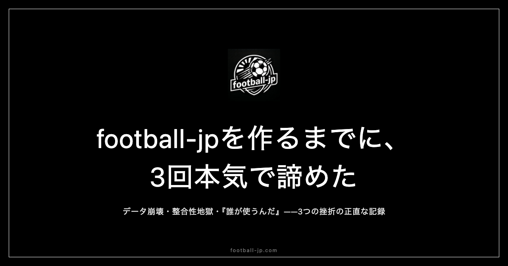

football-jpを作るまでに、3回挫折した話
完成したサイトは「最初から設計通りに作られた」ように見えるかもしれない。しかし実際には、途中で3度、作業が完全に止まった。その停止期間に何が起きたのか——football-jp開発の正直な記録。

第1の壁：データ収集の設計が崩れた
football-jpの核心は「68名の日本人海外組の所属クラブと試合日程を毎日自動取得する」仕組みにある。手動更新では時間的に不可能だ。最初のアプローチはWikipediaの各クラブページからのデータ収集だった。
ところがWikipediaのクラブページは記述形式がページごとにバラバラだった。「Efsテンプレート形式」を使っているページと「wikitable形式」のページが混在し、一つのパーサーを作っても別のクラブページでは機能しない。何日もかけて構築したコードが、対象クラブを変えた瞬間に完全に壊れる。この繰り返しが数日続き、作業が止まった。これが1回目だ。
止まっている3日間、頭の中では問題の構造を整理し続けていた。「形式の違いを自動判定して対応する」という方向性が見えたのは3日後で、それが再開のきっかけになった。止まることで頭が整理された、というのが正確な表現だ。
第2の壁：データ整合性が無限に崩壊した
Efsテンプレート形式用とwikitable形式用のパーサーを両方構築し、形式を自動判定して切り替える仕組みにした。データ取得自体はできるようになった。しかし次の問題として「整合性の崩壊」が現れた。
選手データとクラブデータが食い違う。日付がずれる。一箇所を修正すると別の箇所が壊れる——このループが終わらない。68選手×41クラブという規模のデータを完全に同期させ続けることの難しさが、作業を進めるほど鮮明になっていった。「手動更新への切り替え」を本気で検討したが、それでは毎日何時間もの作業が発生し本末転倒だ。完全自動化の方針を維持したまま続けることを選んだのは、「自分が使いたいサイトを作る」という動機がまだ消えていなかったからだ。
第3の壁：「誰が使うのか」という問いに答えられなかった
技術的な課題が一通り片付き、サイトの輪郭が見えてきた段階で、3回目の停止が来た。「このサイト、誰が使うのか」という問いだ。
大手スポーツメディアはすでに存在する。「日本人海外組に特化」というニッチな切り口に、自分以外の需要があるかどうか確信が持てない。この問いは前の2回と異なり、「技術的にできない」という明確な壁ではなく「意味があるかわからない」という不確かさだった。だから手は動かせる状態のまま、「これに意味があるのか」という問いだけが頭の中を回り続ける。3回の中でこれが最も長く消耗した。
それでも完成させた、たった一つの動機
3度の停止を経て完成させられた理由は、「自分が使いたい」という動機が一貫して変わらなかったことに尽きる。日本人選手の試合を日本時間で確認したい。どの配信サービスで観られるかを一目で把握したい——それだけの動機が、作業を再開させ続けた。
「誰かに見てもらいたい」という動機より「自分が使いたい」という動機のほうが根強い。公開前にアクセスがゼロでも、機能するサイトとして動いていれば自分には価値がある。この「最小単位の価値確認」が、3回目の停止を終わらせた。完成させることは「意思の強さ」ではなく「不便だという感覚の持続」によって可能になった。
停止期間中に起きていたこと
3回の停止には、それぞれ異なる「再開のきっかけ」があった。1回目は3日間の停止中に「形式自動判定」というアイデアが浮かんだ。2回目は整合性問題の全体像を紙に書き出すことで、修正順序の地図が見えた。
3回目は少し異なる。開発中バージョンのfootball-jpを、試合時間の確認のために開いた日があった。未完成の状態でも、自分が求める情報は取り出せた。「完全に完成していなくても、使える」という確認が、「誰かが使うかどうか」という問いの前に「自分が使える」という事実を置いた。それが再開を決めた。
「止まること」と「やめること」は別物だ。停止期間中も、問題の整理と再設計は進んでいた。完全に手を離していなかったことが、3回の停止を「挫折」ではなく「再設計の準備期間」として機能させた。
公開後に第3の問いへの答えが見えてきた
football-jp.comの公開後、「誰が使うのか」という3回目の問いへの答えが少しずつ輪郭を持ち始めた。試合日程を調べるためにアクセスしてくれる人がいる。記事をシェアしてくれる人がいる。開発前には存在を想定していなかった「自分以外のユーザー」が実際に現れた。それが、3回目の停止を起こした問いへの返答になっている。
途中で作業を止めた経験のある人に伝えたいのは、「諦めなくてよかった」ではなく「諦めながらも続けていたらなんとかなった」という記述のほうが実態に近い、ということだ。
3回挫折は、3回再開と同義だ
「3回挫折した」という事実を別の角度から読むと、「3回再開した」とも言える。挫折の回数と再開の回数は、常に一致する。1回しか挫折しなかった人はそこで終わっている可能性がある。3回挫折してそのたびに再開したという事実は、この開発記録の中で最も重要な構造かもしれない。
「止まっている」と「諦めた」は異なる状態だ。3回の停止を経てfootball-jpが完成した今、それが最も言葉にしたいことだ。